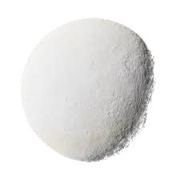

It was Eris' discovery that led to the scientific debate on what makes a planet, a planet. Eris and Pluto both make their home in the Kuiper Belt. This is the area of the solar system filled with icy objects, comets, and dwarf planets. There are 5 known dwarf planets, but scientists speculate that there could be hundreds of undiscovered ones out there!
FUN FACT: Eris is more massive than Pluto, with a greater density of ice and rock.